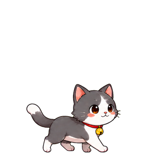
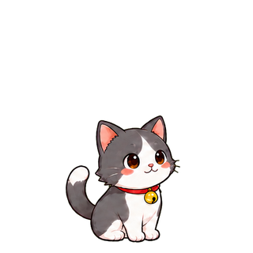

새 메시지엔,
가만히 있을 수 없죠.
Pet이 움직이고 알림을 보여줘요.
메시지가 있을 때 Pet을 클릭하면 Chat으로 이동해요.
아직 읽지 않은 메시지가 있어요.

메시지가 오면 살금살금.
읽고 나면 다시 느긋하게.
내 책상 위에 찾아온 Google Chat 알림 Pet.
Windows 64bit 설치형 & 바로 실행형
오늘도 같이, 잘해봐요!

01 / MEET YOUR PET
취향대로 골라요.
각자의 작은 개인기까지 준비했어요.
실제 앱의 Pet은 설치 후 설정에서 언제든 바꿀 수 있어요.
02 / A DAY WITH CHATPET
새 메시지부터 조용한 휴식까지.
작은 움직임으로 상태를 전해요.
읽음이 확인되면 기뻐하고 다시 쉬어요.
기본 설정은 Sleep 1분 뒤 숨김. 새 메시지에 다시 등장해요.
필요할 때 간단하게우클릭으로 빠른 설정, 메시지가 없을 땐 드래그로 위치 이동.
메시지 본문은 저장하지 않아요Google Chat의 지원 범위 안에서 알림 상태를 확인해요.
03 / BRING YOUR BUDDY HOME
당신의 바탕화면에 작은 자리를 내어주세요.
Windows에서 ChatPet을 실행해요.
설정에서 사용하는 Google 계정으로 연결해요.
좋아하는 동료와 알림 방식을 선택해요.
A FEW LITTLE DETAILS
Windows 64비트용 앱입니다. Google Chat 연동은 Google 계정 연결이 필요하며, 조직의 Google Workspace 권한과 Google 검색 API 지원 범위에 따라 사용할 수 있는 알림이 달라질 수 있어요.
알림이 없으면 조용히 쉬고 기본 설정에서는 Sleep 상태가 1분 지속되면 숨습니다. 새 알림에 다시 나타나며, 알림 일시 중지와 움직임 줄이기를 설정할 수 있어요.
1.2.14부터 앱 시작 시 새 버전을 확인하고 업데이트할 수 있어요. 1.2.13 이하를 사용 중이라면 기능이 포함된 버전을 한 번 직접 설치해 주세요.
앱은 메시지 본문을 저장하지 않습니다. 로그인 정보는 현재 Windows 사용자용으로 암호화해 보관하며, 업데이트 확인에 메시지나 계정 정보를 보내지 않습니다.